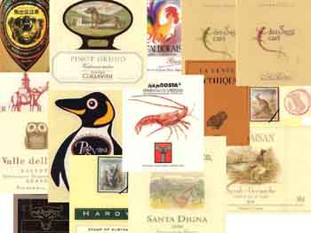

<!DOCTYPE HTML PUBLIC "-//W3C//DTD HTML 4.01 Transitional//EN">
<HTML>
<HEAD>
<!-- Google tag (gtag.js) -->
<script async src="https://www.googletagmanager.com/gtag/js?id=G-0EFBECSQ40"></script>
<script>
  window.dataLayer = window.dataLayer || [];
  function gtag(){dataLayer.push(arguments);}
  gtag('js', new Date());

  gtag('config', 'G-0EFBECSQ40');
</script>
<META http-equiv="Content-Type" content="text/html; charset=UTF-8">
<META name="GENERATOR" content="IBM WebSphere Studio Homepage Builder Version 6.5.0.0 for Windows">
<META http-equiv="Content-Style-Type" content="text/css">
<META name="Keywords" content="ワイン,ラベル,コレクション,動物,ねこ,黒猫,ZELLER SCHWARZE KATZ">
<META name="Description" content="動物のラベルのコレクション">
<LINK rel="stylesheet" href="../winelabelsite.css" type="text/css">
<TITLE>アニマル動物園</TITLE>
</HEAD>
<FRAMESET cols="*,200">
  <FRAME src="top.htm" name="right" scrolling="AUTO">
  <FRAME src="animalindex.htm" name="アニマル動物園">
  <NOFRAMES>
<BODY>
<H2>アニマル動物園</H2>
  <HR>
  <P>ツェラー・シュヴァルツェ・カッツで有名な黒猫を筆頭に、動物が描いてあるワインのラベルは結構あるものです。ここではそんな動物の絵が描いてあるラベルを集めてみました。</P>
  <P align="center"></P>
  <HR>
  <P><A href="animalindex.htm">アニマル動物園目次へ</A></P>
  <P><A href="../index.html">ホームページへ</A></P>
  </BODY>
</NOFRAMES>
</FRAMESET>
</HTML>


